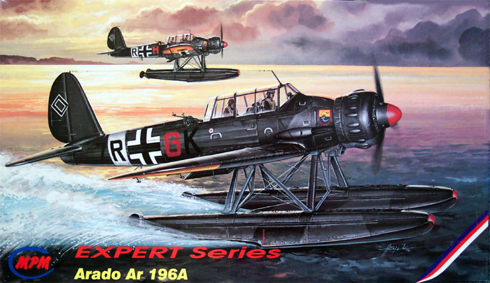
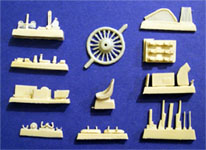
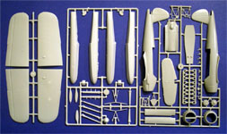
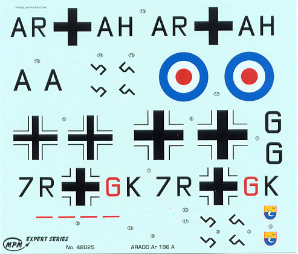

{kind=link}
{kind=link}
{kind=link}


MPM 1/48 Scale Arado 196A Expert Series

Kit # 48025 MSRP $29.98
Images and text Copyright © 2004 by Matt Swan
Developmental Background
The Arado Ar 196 was the primary floatplane on board the German Kriegsmarine ships. Development of this type started in October 1936 when the RLM asked for a replacement for the obsolete He 114 Bi-planes. The only stipulations were that it would use the BMW 132 engine, and they wanted prototypes in both twin-float and single-float configurations. Designs were received from Dornier, Gotha, Arado and Focke Wulf. Heinkel sat it out, thinking that the 114 could still be made to work. With the exception of the Arado design, they were all conventional biplanes. That gave the Arado better performance than any of the others and the RLM ordered four prototypes. The first prototypes of the nearly all-metal (only the stern was covered with fabric) planes flew in summer of 1937 showing its superiority over the competing Focke-Wulf design.
The Ar 169 prototypes were all delivered in summer of 1937. The V-1 (which flew in May) and the V-2 with twin-floats as A models, and V-3 and V-4 on a single float as B models. Both versions demonstrated excellent water handling and there seemed to be little to decide one over the other. Since there was a possibility of the smaller outrigger floats on the B models 'digging in', the twin-float A model was ordered into production. A single additional prototype, V-5, was produced in November 1938 to test final changes. Ten A-0's were delivered in November and December 1938, with a single MG 15 in the rear seat for defense. Five similarly-equipped B-0's were also delivered to land-based squadrons. Full-scale production started in June 1939 with twenty A-1 production models, enough to equip the surface fleet.
Starting in November 1939 production switched to the heavier 'land based' A-2 model. It included shackles for two 50kg bombs along with two 20mm MG-FF cannons in the wings protected from seawater under coverings that opened during firing and a 7.92mm MG 17 in the cowling. The A-4 with a strengthened airframe, additional radio and VDM propeller replaced it in December 1940. The apparently mis-numbered A-3 replaced the A-4, with additional strengthening of the airframe. The final production version was the A-5 in 1943 with improved radios, upgraded cockpit instruments. Arado changed the rear gun to the much-improved MG 81Z on the A-5 model also.
The Arado Ar 196 was relative heavily armed for a sea based reconnaissance plane. Its pilots loved the plane and with its agility it was able to protect itself against land-based fighters in the early stage of the war. It was used on larger Kriegsmarine ships and auxiliary cruisers but with the loss of the German surface fleet the A-1's were added to coastal squadrons, and continued to fly reconnaissance missions and submarine hunts into late 1944. Three notable operations were the capture of the HMS Seal, the repeated interception of RAF Armstrong-Whitworth Whitley bombers and the capture of the British submarine H.M.S. Shark in May 1940. Although it was no match for a fighter, it was considerably better than its Allied counterparts, and generally considered the best of its class.
The Ar 196 was one of the most effective and most used small flying boats in WWII. The engine was a BMW-made 132K nine-cylinder radial with a rating of 960 hp. The wingspan was 12.4 meters, and the plane had a length of 11 meters with a height of 4.4 meters. It achieved a speed of 310km/h and it holds the distinction of being the last combat floatplane built in Europe. Bulgaria is the only country outside of Germany that was officially supplied with these craft. The Arado AR-196 were given the code-name ”Shark”. 541 Ar 196’s of all versions were built at Arado, Société Nationale de Construction Aèronautique in France and Fokker in the Netherlands between 1939 and 1944.
The Kit

This is not the only 1/48 scale kit produced of this nimble little seaplane. HiPM marketed an injection-molded kit also that included some photo-etched pieces but the molding is very crude, with thick plastic parts and lots of flash. It was reported to be very difficult to build. While this kit does not offer any photo-etched pieces it does include a small bag chock full of resin goodies (38 pieces). The overall moldings appear to be of fairly good quality for a Czech kit, not up to Tamiya standards but definitely workable. All the panel lines are finely recessed and the rear fuselage fabric material is fairly well represented.

The kit parts show no flash or sink marks. The sprue gates of all of a normal size and all injector pin markings are in concealed areas. There are three trees of injection-molded pieces totaling 69 pieces. There is one and only one vacuformed canopy so you have no room to screw up when working with that piece. All together there are 108 pieces in the box.
Items of interest include the wing, which is engineered as a five-piece assembly and the engine with individual cylinder heads – lots of them. There are fourteen pieces involved in the engine assembly and once complete it needs to be sandwiched into a two piece cowling. The fit of the primary pieces seems to be good and the panel lines meet up well. There are a lot of fiddly little parts to be attached around the exterior of the aircraft such as four aileron counterweights, Pitot tube and various vent tubes and aerials on the belly of the craft. There are also three sets of wire rigging that have to be installed into the float structure. This material is not included in the kit but a little invisible thread or 4 pound fishing line should suffice. The only detail that is really lacking from this kit is a crew.
Decals and Instructions

The kit includes marking for two different aircraft; an A-3 unit stationed in the Aegean Sea during 1942 and an A-1 unit Panzershiff Admiral Graf Spee from 1939. The decals show good registry and the color density appears to be solid. They do not look to be thick decals and will probably cooperate well during application. The swastikas for the fin are in the now standard two-piece arrangement; I guess I should be happy that there is even that anymore with all the political correctness invading the hobby.
The instructions are an eight page affair that includes a very brief history of the aircraft in four languages along with a four view drawing of it. There is a complete pictorial listing of all the parts that should be in the box, a color chart of Humbrol paint codes and a page of advertisement for MPM’s other products. There are two pages of decal placement instructions and painting guides, which leaves us with only three pages of assembly instructions. Fortunately there is a wiring diagram for that float wire structure I mentioned earlier. There are plenty of color codes scattered throughout those three pages of assembly instructions along with instructions to weight the nose area of one float. I think I might add weight to each float just to be assured of not having a tail sitter.
Conclusions
While the moldings are not of extreme high quality they are good enough for any competent modeler to produce a kit worthy of praise. At one time MPM did produce a “B” model of this aircraft but it is no longer available. There are not many aftermarket items around for this kit but Moskit makes a set of day exhausts for the model and Cutting Edge makes a set of masks for it. This is a neat aircraft and will make a nice addition to any Luftwaffe collection. I’ve always felt that there was a shortage of 1/48 scale seaplanes and this one will fill a hole in my collection.